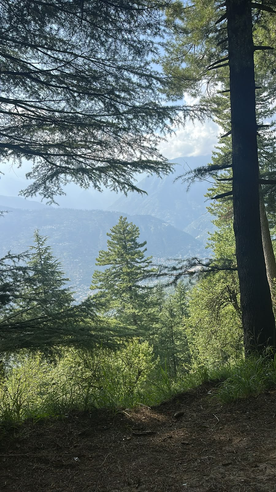
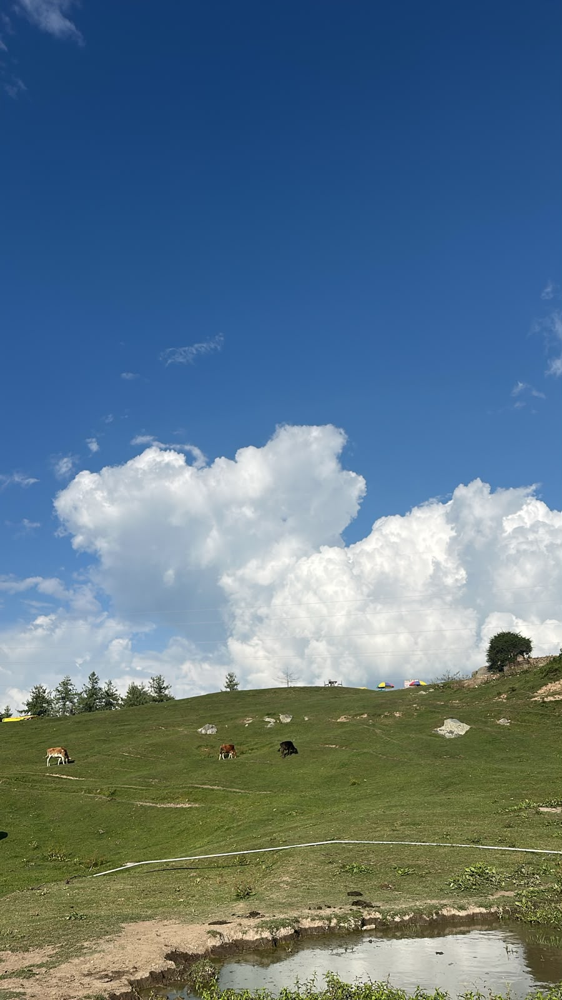
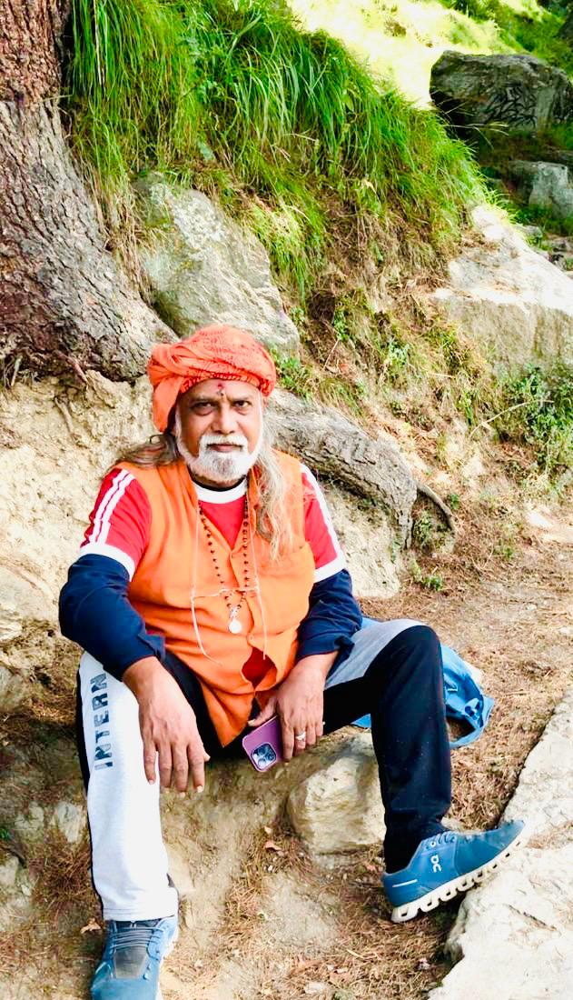

त्रिपुरसुन्दरी
Peregrinação de autoconhecimento · Himalaia indiano
Duas semanas em Naggar, no vale do Kullu, entre o estudo, os templos e o festival da vila — no lugar onde esta tradição ainda é vivida todos os dias.
Grupo reduzido. Acontece uma vez.
Existem viagens que a gente repete. Esta não é uma delas.
A yatra não é turismo com aulas no meio. É atravessar, junto com o professor e com um grupo pequeno, o vale onde o Vedanta continua sendo transmitido do jeito que sempre foi — a montanha, o templo, o festival, a lua cheia, tudo no mesmo movimento e no mesmo calendário.
É o tipo de coisa que muda o lugar de onde você estuda depois. E que você leva pelo resto da vida.
Por que ir
Deixar de estudar a tradição védica de fora e passar a fazer parte dela — da linhagem, e da família de Vedanta que se formou em volta desse estudo.
Duas semanas de proximidade real, de manhã na aula e no resto do dia na estrada. É outra escala de contato — não existe equivalente à distância.
Os templos do vale, o festival da vila, a rotina da montanha. Ver de perto o que até aqui você só encontrou nos textos.
Voltar com o estudo assentado — e com uma memória que acompanha a vida inteira.
O lugar
Uma vila na encosta, acima do rio Beas, sob a guarda da deusa que preside aquele lugar. De um lado o vale se abre; do outro, a floresta de cedros sobe até onde começam os templos.


O roteiro
9 a 11 de maio
Saída do Brasil entre os dias 9 e 10. No dia 11, chegada em Nova Délhi, voo até Bhuntar/Kullu e a subida de carro até Naggar.
12 a 17 de maio
Aulas pela manhã. À tarde, os templos do vale e as caminhadas pelas montanhas sagradas. À noite, satsaṅga para assentar o dia.
18 a 21 de maio
O festival do templo da vila cai exatamente nesses dias — e o grupo entra nele acompanhado, com a orientação de quem sabe o que está acontecendo.
O ponto alto é a lua cheia do dia 20.
22 a 24 de maio
As aulas voltam nos dias 22 e 23, agora com o que o festival abriu. Retorno no dia 24.
Companhia
Não é um pacote com serviços divididos. São dois amigos que decidiram atravessar esse caminho juntos — e abriram o grupo para quem quiser ir junto.
Ensino de Vedanta
Acharya Jonas Masetti
Ensino tradicional de Vedanta. Vishva Vidya.

Astrologia védica
Jyothi Ananda
Anfitrião da yatra em Naggar.
Investimento
US$ 2.500
por pessoa
Não inclui passagens aéreas nem alimentação.
Inscrição
O grupo é reduzido e a viagem acontece uma vez. Deixe seus dados: a gente entra em contato para conversar, confirmar a vaga e explicar os próximos passos.